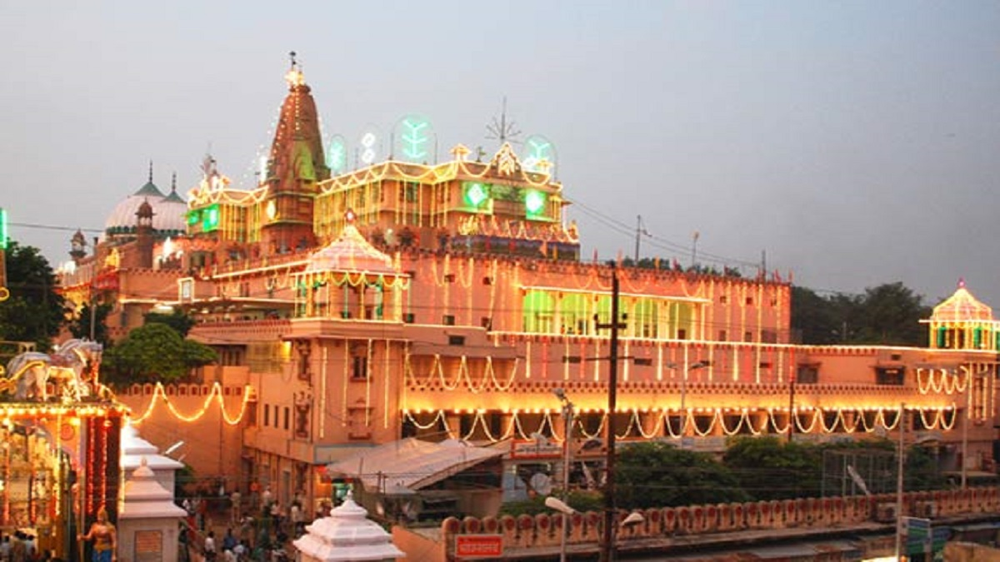
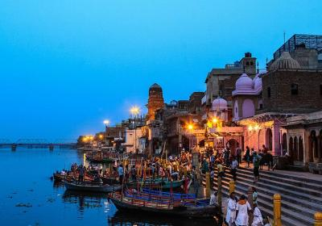
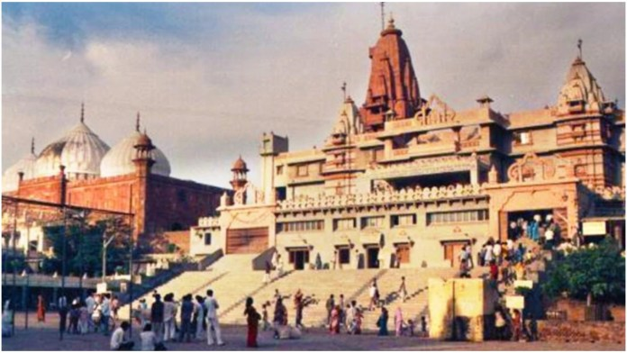
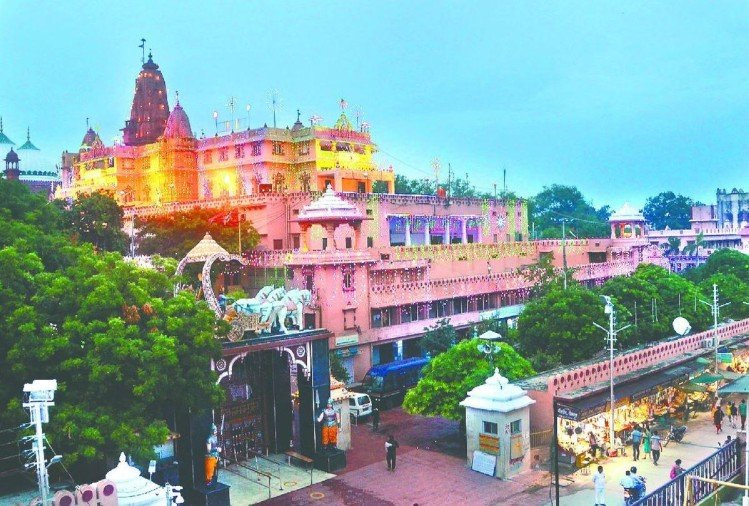
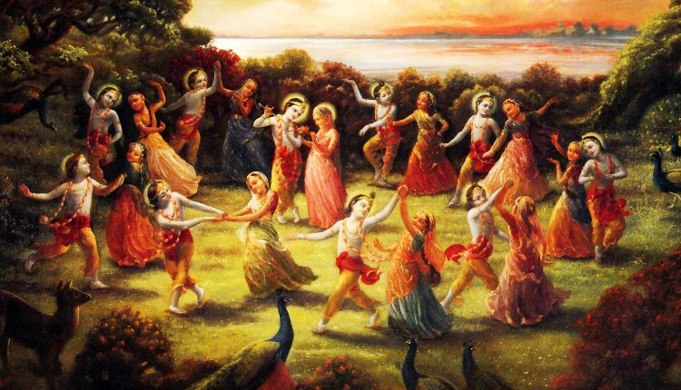
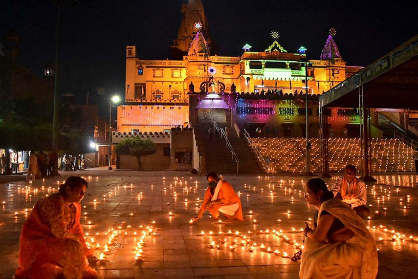
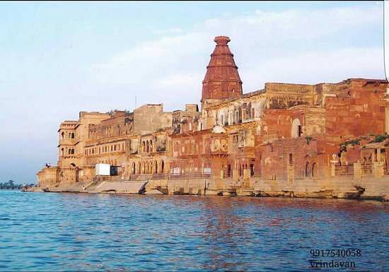

Mathura is a Hindu sacred city and is regarded the hub of Brij
Bhoomi, Krishna's homeland. Vrindavan is Mathura's twin city. Mathura
(or Brajbhoomi) is well-known for being the birthplace of Lord Krishna,
an important Hindu deity. It is an important Hindu pilgrimage site and
one of India's seven sacred cities. The Shri Krishna Janmabhoomi temple
is the most important pilgrimage site in Mathura.
Shri Krishna Janambhoomi is a Hindu temple. Krishna is claimed to have
been born in a jail cell, and the temple is built around it. It is close
to the Shahi Eid Gah Mosque and the Kesava Deo Temple. The government
has made it illegal to photograph inside the compound.




The spot is revered as Krishna's birthplace. According to legend,
Krishna was born in a prison, which is claimed to have existed on the
area indicated by a stone plate. The idgah is to the right of it. 1949
King Vajra erected the initial temple, which was later restored by
Vikramaditya. In its history, the temple is claimed to have been
demolished and rebuilt 17 times. The temple is now one of the most
visited in the world.
About the culture
Mathura culture holds a prominent position in Indian history and
culture. For numerous decades, Mathura has been an active hub of
Brahmanism, Buddhism, and Jainism in Uttar Pradesh. Mathura's culture is
known all over the world for its art, religion, and festivals. In
Mathura, all of the major parts of culture have come together, including
history, society, epigraphy, religion, archaeology, iconography,
numismatics, art, and sculpture.
In Mathura, there are various cultural traditions, such as the Sanjhee,
which is a vivid art of floral decoration on the ground. Another
important aspect of Mathura culture is Raaslila. According to the
Bhagwat Purana, Shri Krishna and the gopis performed the Raas on the
Yamuna's riverbank at Vrindavan. Since then, the dance has been known as
Raaslila, and only young Brahmin males between the ages of 13 and 14 can
perform it. On Holi's Dooj, the traditional Braj folk dance is
performed.



While dancing, a female dancer balances a row of illuminated deepikas on
her head. In most performances, the number of bulbs ranges from 51 to
108. The Rasiya songs are the holy couple Radha and Shri Krishna's love
melodies. At Braj, these songs are required to be sung throughout Holi
celebrations and all other celebratory events.The Mathura culture is
well-known throughout India, particularly in areas where Hinduism is the
predominant religion. Even in other countries, their rich folk song
culture is well-known.